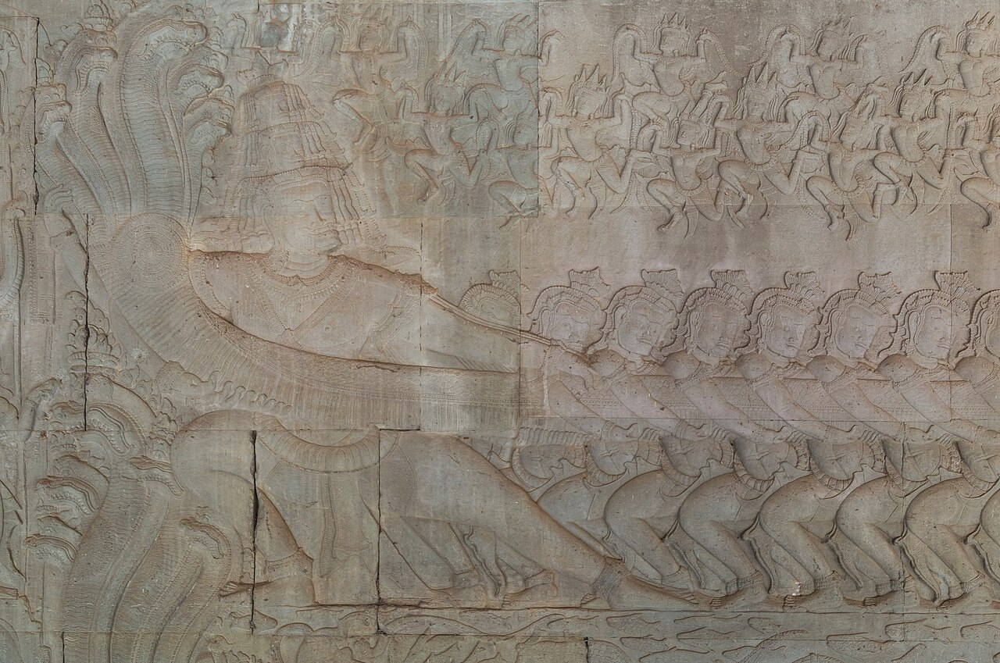
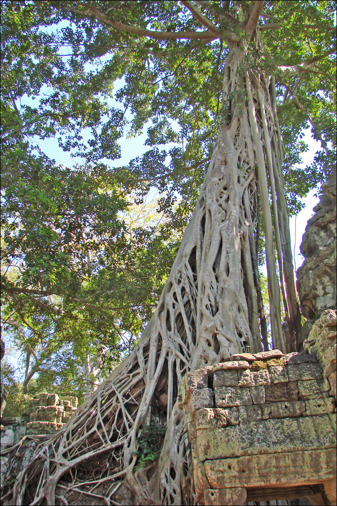

Angkor Wat is often imagined as a single sunrise photograph. In person, the visit is larger: water, galleries, courtyards, and the steady movement of people finding their own quiet view.
A temple with more than one story
Built in the early 12th century under King Suryavarman II, Angkor Wat began as a Hindu temple dedicated to Vishnu and later became an active Buddhist place of worship. Its galleries hold long sequences of stone reliefs; the wider Angkor site reflects centuries of Khmer history. UNESCO’s Angkor overview offers context, while the official Angkor Enterprise temple guide shows how broad the park is.
The outer walls can hold your attention for a while. Look closely at one carved scene, then look up again: the same stone changes color as the morning moves across it.

Give the morning a little space
Angkor Enterprise sells the official passes and lists current ticket options. Check its ticket page before leaving Siem Reap, and confirm current entry instructions rather than relying on an old itinerary.
Angkor is a large archaeological park, not one building. Decide how many stops suit your energy, agree on transport with your driver, and leave room for heat, walking, and a break. A slower route can make the details easier to remember than a list of temples crossed off.
A living place, not a backdrop
Angkor Wat remains a place of worship. Follow posted directions, dress respectfully, keep clear of restricted areas, and give ceremonies and other visitors room. When a path narrows, let people pass before stopping for a photograph.

Official visitor information
- Angkor Enterprise official passes and tickets
- Angkor Enterprise temple guide
- UNESCO World Heritage Centre: Angkor
Check current entry details and conservation guidance with official sources before visiting.
Recommended apps for the best trip
These independent services are not Met partners. Confirm routes, pickup points, and current availability before booking.
Google Maps
Get oriented between Siem Reap and the temples, then confirm park routes locally.
Grab
Check ride options around Siem Reap and agree on temple-park pickup details.
Agoda
Compare stays in Siem Reap and check the distance to your planned pickup.
12Go Asia
Compare longer bus and rail connections to Siem Reap when the route is listed.
Met
save your name and the memory in the “Angkor Wat” Guest Book with a handwritten-style note or photo, and connect with other great travelers along the path.